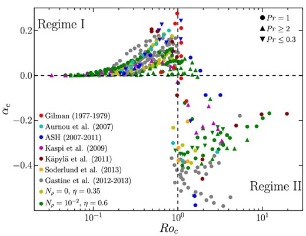

Jess Birky
PhD Defense, 15 May 2026
Committee: Rory Barnes, Eric Agol, Jim Davenport, Miguel Morales
The Role of
Tides
and
Differential Rotation
in the
Angular Momentum Evolution
of Low-Mass Stars
First, what are low-mass stars and why are they interesting?
The Role of
Tides
and
Differential Rotation
in the
Angular Momentum Evolution
of Low-Mass Stars
The mass of a star determines its structure
Low-mass stars (M < 1.5 Msun) have convective exteriors

Multi-wavelength view of the Sun from the Solar Dynamics Observatory
Stellar rotation plays a fundamental role in the behavior of stars
magnetic fields
mass loss
dynamical interactions
starspots + convection
dynamo process
differential rotation
activity cycles

magnetic fields
mass loss
Differential rotation drives the stellar dynamo process

dynamo process
differential rotation
activity cycles
Differential rotation drives stellar dynamos
Differential rotation drives the stellar dynamo process
While there is a lot we know about the Sun, it only a single data point among all the stars in the Universe (billions of which we have observations for)
To build a complete physical picture of how stars work, we need to understand how stellar structure and rotation evolves as a function of mass and age
Transiting exoplanet
Kepler / K2 mission
Satellite Survey


Rotation periods for >1 million stars!
Stellar rotation plays a fundamental role in the behavior of stars
magnetic fields
mass loss
dynamical interactions
starspots + convection
dynamo process
differential rotation
activity cycles
My thesis focuses on two key aspects of stellar rotation:
magnetic fields
mass loss
dynamical interactions
starspots + convection
dynamo process
differential rotation
activity cycles
The Role of Tides and Differential Rotation in the Angular Momentum Evolution of Low-Mass Stars
Tides
Background: why are tidal forces important to binary evolution?
Problem: can we use eclipsing binaries to constrain tidal models?
Solutions: what do we learn from model sensitivity analysis and simulated inference?
Birky et al. 2025: Prospects of Constraining Equilibrium Tides in Low-Mass Binary Stars
Birky & Barnes 2026: ALABI: Active Learning for Accelerated Bayesian Inference

What types of binaries are we modeling?
Modeling the dynamical evolution of binary stars

An introduction to tides

Gravitational interactions
can deform the shape of the star,
introducing a "tidal bulge"
Equilibrium tides
Constant Phase Lag (Ferraz Mello 2008)
Constant Time Lag (Hut 1881)
Under weak friction, we can assume one of two models:
Tidal friction causes the system to dissipate energy in the form of heat

The observed behavior of short-period binaries

Orbital evolution: Constant Phase Lag (CPL) model

Orbital evolution: Constant Time Lag (CTL) model
Central question: can we infer tidal Q parameters from observations?
Sensitivity analysis: CTL + stellar

Sensitivity analysis: CPL + stellar

ALABI: Active Learning for Accelerated Bayesian Inference

Simulated posteriors and degeneracy analysis


Simulated posteriors and degeneracy analysis
Population inference

Could differential rotation explain subsynchronous binaries?
Hobson-Ritz & Birky 2025

Differential Rotation
Derivation: how can we represent starspots in time and frequency?
Tool development: implementing, optimizing, and validating the model
Interpretation: what physical insights can we extract from lightcurves?
Application: how does this model perform on real data?
Differential Rotation
Derivation: how can we represent starspots in time and frequency?
What if we could measure differential rotation?
well, it's hard...
Aside from the sun, we cannot spatially resolve images of other stars

What if we could measure differential rotation?
well, it's hard...
Furthermore, lightcurves are degenerate: different combinations of spot parameters can produce identical lightcurves
And also non-unique: different realizations of the same stellar/spot properties (inclination, period, differential rotation, spot lifetime) can have randomly varying individual spots that produce unique lightcurves


What if we could measure differential rotation?
maybe even hopeless...?
Parameterizing differential rotation
Methods for measuring differential rotation and their limitations
asteroseismology
doppler imaging
transit mapping
spectral fourier transform
periodogram
gaussian processes


Measuring differential rotation: the transit method


What physical information do GP models encode?
What if we could come up with an interpretable GP model?
in which hyperparameters of the kernel represent physical spot properties?
the sun
a model
A physically-motivated starspot model
Model from Kipping 2012 presents a simple starspot model that produces quasi-periodic lightcurves

To understand how lightcurves encode information about the surface of the star (differential rotation and inclination) and spot properties (spot lifetimes, sizes, contrasts, numbers), let's break down this model further
First let's examine how a single spot affects the observed flux...
Visibility function: describes the dip in flux due to a rotating spot
Envelope function: describes the growth and decay of spot sizes over time
Envelope function: describes the growth and decay of spot sizes over time
Visibility function: describes the dip in flux due to a rotating spot
x
Tools for representing time series
Defining the power spectral distribution
Defining the kernel (autocorrelation) function
How do we use the kernel function to infer spot parameters from data?
We can do this using a tool called Gaussian processes
GPs are usually computationally slow, scaling O(n^3) with the number of data points
However, the sparse banded structure of the spotgp kernel can be solved O(b^2 n)!
spotgp: a JAX based GP solver + MCMC implementation

spotgp: a JAX based GP solver + MCMC implementation

Cramer-Rao analysis
Under what conditions/regions of parameter space is it possible to constrain DR and inclination?

Under what conditions can we infer differential rotation?

Under what conditions can we infer inclination?

How does this method perform with observational noise?
Application to Kepler-63


Kepler-63 Posterior
Conclusions
Using model sensitivity analysis and simulated inference, I show that inferring tidal Qs from individual binaries is an ill-posed problem and alternatively, population constraints from samples of EB spin-orbit ratios may provide better leverage for constraining tides(Birky et al. 2025, Birky et al. 2026)
Finally, I develop a novel, physically motivated Gaussian process kernel for inferring differential rotation, inclination, and starspot properties just from stellar lightcurves (Birky et al. in prep)
So what comes next?
Furthermore, EB population in Kepler and TESS show a significant population of subsynchronous binaries which cannot be explained by tides and may be due to differential rotation (Hobson-Ritz & Birky et al. 2025)
Future Work
spotgp: a JAX based GP solver + MCMC implementation
New text


Future projects: science applications

1Future projects: extending the GP to multi-wavelength data


Future projects: rotation periods from LSST
Ackowledgements
[Acknowledgements]
[Final summary slide]

Conclusions
view the interactive slides:
build your own slides: